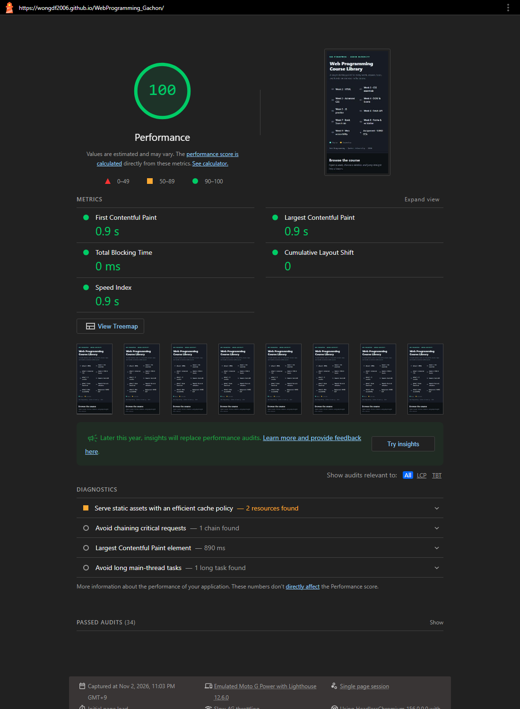
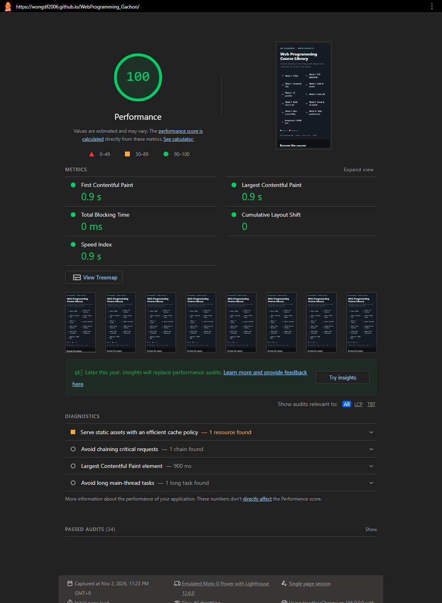

Homework: Lighthouse Performance
Task
- Run Lighthouse on your personal site and screenshot the Performance score.
- Apply at least 3 optimizations from today.
- Re-run Lighthouse and screenshot the new score.
- Post both screenshots to your page with a 2-sentence description of what you changed.
My results — Web Programming Course Library
Site: wongdf2006.github.io/WebProgramming_Gachon · Lighthouse 12.6.0, Performance only, mobile (Moto G Power, slow 4G), 2 Nov 2026.
I served a minified stylesheet, stopped the Assignment video from downloading until it is played, added an inline favicon to remove a failing 404 request, and made each week's links build only when that week is opened. The score was already 100 and stayed 100, but the page now transfers 63% less data on load (22.6 → 8.4 KiB), starts with 56% fewer DOM elements, and makes no failed requests.
| Lighthouse measurement | Before | After |
|---|---|---|
| Performance score | 100 | 100 |
| First / Largest Contentful Paint | 0.9 s / 0.9 s | 0.9 s / 0.9 s |
| DOM elements | 800 | 348 |
| Network requests | 10 | 8 |
| Data transferred | 22.6 KiB | 8.4 KiB |
| Failed requests | 1 (404 favicon.ico) | 0 |
| Stylesheet | style.css, 5,559 bytes | style.min.css, 4,663 bytes |
Both columns are from the live site. I ran the "after" audit three times: two runs matched the table, one scored 99 (normal run-to-run variation).


The optimizations
- Minification:
style.min.cssis built fromstyle.csswith cssnano (16% smaller). - Lazy loading: the video uses
preload="none", so nothing downloads until Play is pressed. - Fewer requests: an inline SVG favicon replaces the browser's automatic
/favicon.icorequest, which returned 404. - Smaller DOM: only the open week's links are built at load; the others are built when opened.
Not possible here: longer cache times. GitHub Pages sets Cache-Control: max-age=600 for every file and it can't be changed.